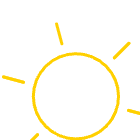
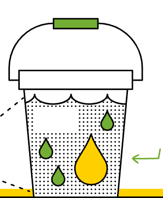
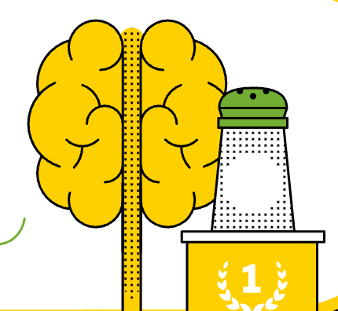
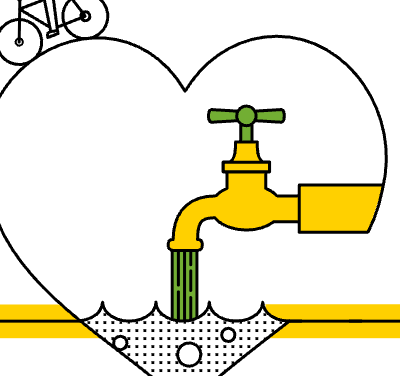
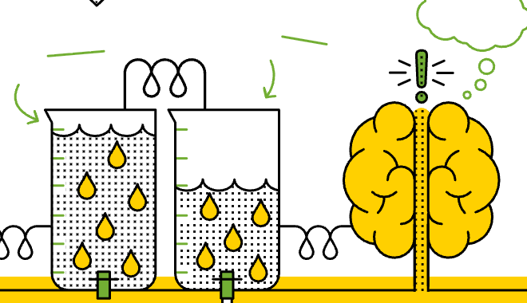
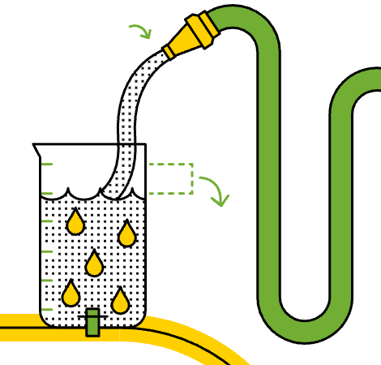
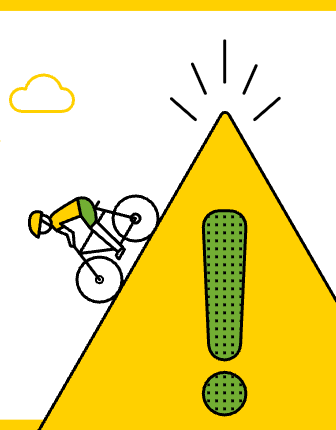
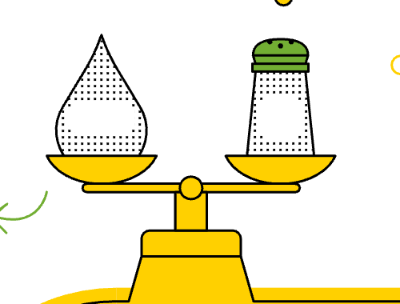
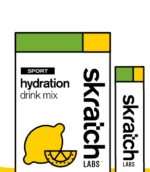
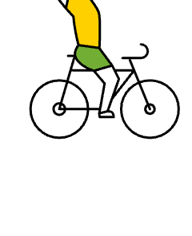

Hidratación
¿Por qué es importante reponer el sodio que perdemos al sudar?
Infografía de Skratch Labs · 3 min de lectura
¿Por qué es importante reponer el sodio que perdemos al sudar?
Para responder, hay que entender cómo el cuerpo se mantiene fresco durante el ejercicio mientras conserva normales sus niveles de agua y de electrolitos (es decir, de sodio).
Al ejercitarnos nos calentamos y sudamos
Ese sudor se evapora y enfría la piel y la sangre caliente que corre debajo, manteniéndonos en un rango de temperatura muy estrecho: de 38,5 a 39,5 °C.

El sudor es agua y electrolitos
Los electrolitos son elementos con carga eléctrica, esenciales para el sistema nervioso. El 90 % del electrolito del sudor es sodio y cloruro (Na⁺ y Cl⁻); el resto es una mezcla de potasio, magnesio y calcio.

El sodio es clave para el sistema nervioso
Perdemos varios electrolitos al sudar, pero son las alteraciones del equilibrio de sodio en la sangre (3200 a 3500 mg por litro) las que más afectan al sistema nervioso, el que permite al cerebro controlar todas las funciones del cuerpo.

El agua es clave para el sistema cardiovascular
El sistema cardiovascular lleva oxígeno a los tejidos y retira CO₂ y calor. Sudar nos mantiene frescos, pero perder tan solo el 2 % del peso corporal en agua ya puede afectar la función cardiovascular y el rendimiento.

Sudar nos deshidrata y nos da sed
Al sudar no solo perdemos agua: la concentración de sodio en la sangre sube, porque el sudor es menos salado que la sangre. Ese aumento es uno de los principales disparadores de la sed durante el ejercicio.

El agua quita la sed, pero no rehidrata
El mecanismo de la sed nos mantiene algo deshidratados para sostener el sodio en sangre: prioriza el sistema nervioso por encima del cardiovascular. Como parte del sodio se va en el sudor, basta con beber menos agua de la que perdimos para calmar la sed.

Beber agua más allá de la sed puede perjudicar
Si repones con agua todo el líquido que perdiste, corres el riesgo de diluir la concentración de sodio en la sangre. Eso puede afectar al sistema nervioso.

Para mantener el equilibrio, hay que beber sudor
Al reponer el sodio perdido en el sudor, el mecanismo de la sed funciona mejor: nos guía a beber una cantidad de agua parecida a la que perdimos, sin diluir el sodio en sangre.

Sport Hydration Mix es como beber el sudor perdido
Nuestra bebida deportiva repone el sodio promedio que se pierde en el sudor. La mayoría de las bebidas deportivas repone solo una fracción.*

* También reponemos la pequeña cantidad de potasio, magnesio y calcio que se pierde.
Skratch optimiza las funciones cardiovascular y nerviosa
Con la cantidad correcta de sodio en tu bebida deportiva optimizas tanto la función cardiovascular como la nerviosa, y eso te permite rendir mejor. Ayuda sin pasarte de la raya.
